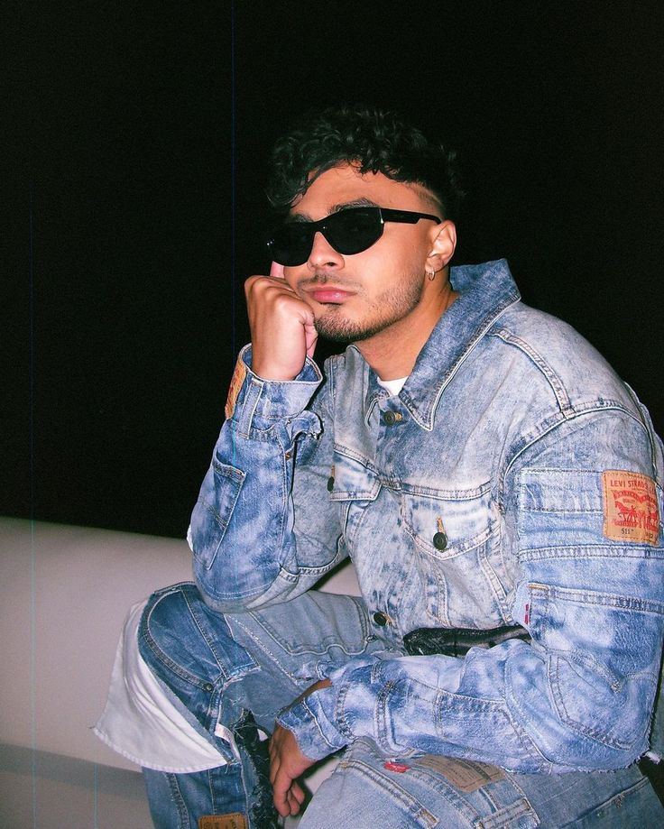

Su juventud estuvo marcada por su vida en el barrio de Hato Rey, San Juan, Puerto Rico. Desde temprana edad, demostró una fuerte inclinación por la cultura urbana y la música. Batallas de Rap: Durante su etapa escolar, participaba activamente en batallas de rap, donde comenzó a destacar por su lírica. Foros Digitales: En sus inicios, utilizaba foros de música popular en Puerto Rico para compartir sus primeras composiciones y ganar visibilidad en la escena local. Influencias Tempranas: Su estilo fue influenciado por el rap de la "vieja escuela" y artistas que admiraba desde joven, lo que eventualmente le permitió diferenciarse en el género urbano con una propuesta más alternativa. Despegue Artístico: Su carrera profesional tomó impulso real a principios de la década de 2010, consolidándose tras años de trabajo independiente en su juventud.